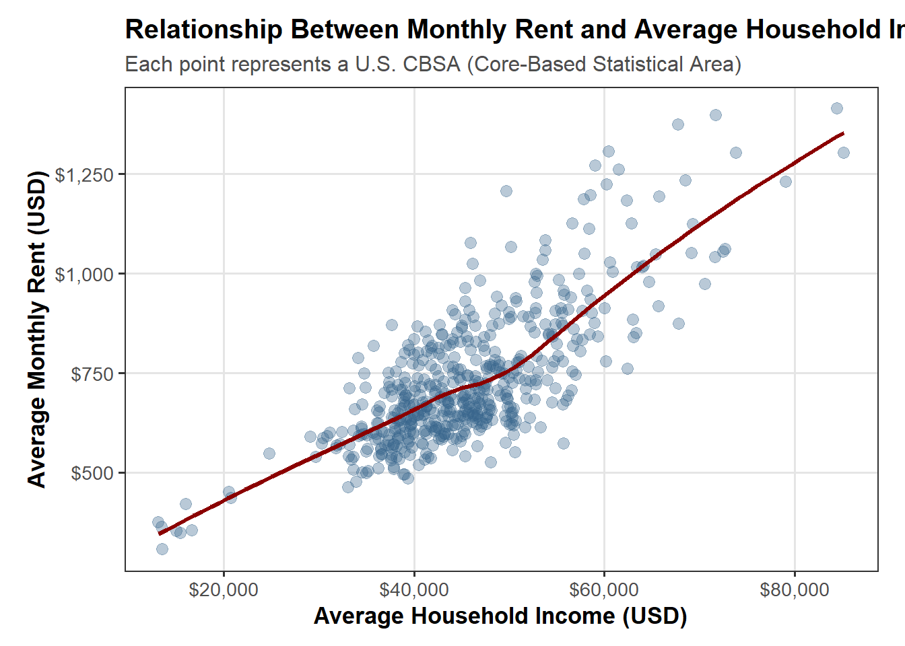
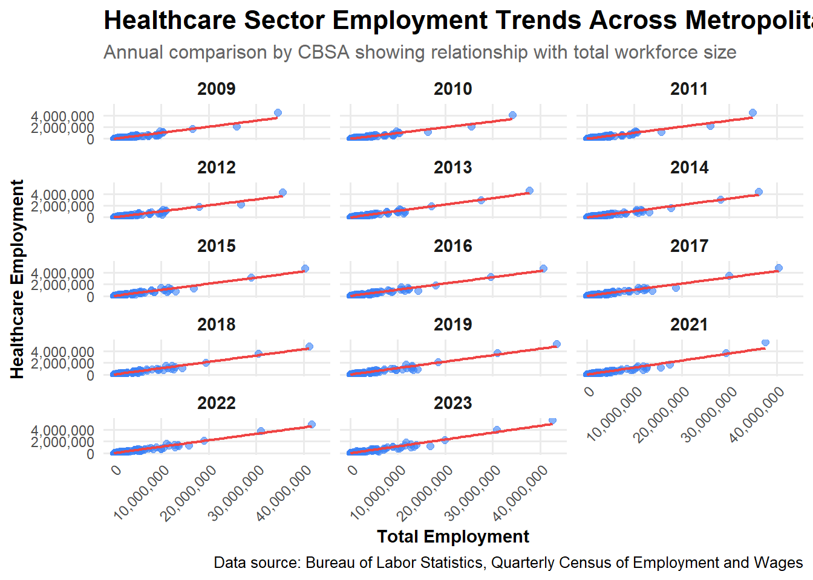
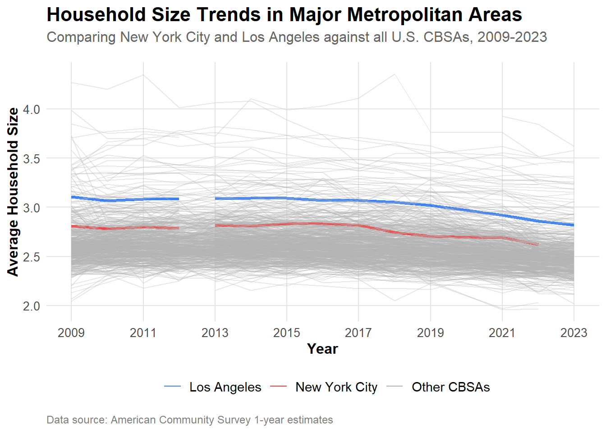

For this assignment, we will identify America’s most “YIMBY” cities using a variety of census data sources and real estate indices. Below, we will use the results of our analysis to lobby politicians in support of a federal YIMBY-incentive program. We will then prepare a short policy brief that is designed to help us find congressional representatives whose districts would benefit from adopting YIMBY-type policies and whose reelection prospects would be improved by sponsoring this type of bill.
2015 is the last year in which the NYC CBSA had the most data scientists in the country.
5. What fraction of total wages in the NYC CBSA was earned by people employed in the finance and insurance industries (NAICS code 52)? In what year did this fraction peak?
Show code
WAGES |>filter(FIPS =="C3562") |>group_by(YEAR) |>summarize(`Total Wages`=sum(TOTAL_WAGES),`Finance and Insurance Wages`=sum(ifelse(INDUSTRY ==52, TOTAL_WAGES, 0)),`Share of Finance & Insurance`=`Finance and Insurance Wages`/`Total Wages`,.groups ="drop" ) |>mutate(`Total Wages`= scales::dollar(`Total Wages`),`Finance and Insurance Wages`= scales::dollar(`Finance and Insurance Wages`),`Share of Finance & Insurance`= scales::percent(`Share of Finance & Insurance`, accuracy =0.1) ) |>arrange(desc(`Share of Finance & Insurance`)) |>datatable(options =list(searching =FALSE, info =FALSE))
The fractions of total wages in the NYC CBSA that was earned by people employed in the finance/insurance industries peaked in 2014.
Visualizations
1. The relationship between monthly rent and average household income per CBSA in 2009.
Show code
library(ggplot2)Q1 <- INCOME |>filter(year ==2009) |>inner_join(RENT |>filter(year ==2009), join_by(GEOID == GEOID)) |>select(NAME.x, household_income, monthly_rent)ggplot(Q1, aes(x = household_income, y = monthly_rent)) +geom_point(alpha =0.35, size =2.8, color ="steelblue4") +stat_smooth(se =FALSE, color ="red4", linewidth =1.2) +scale_y_continuous(labels = scales::dollar) +scale_x_continuous(labels = scales::dollar) +labs(title ="Relationship Between Monthly Rent and Average Household Income (2009)",subtitle ="Each point represents a U.S. CBSA (Core-Based Statistical Area)",x ="Average Household Income (USD)",y ="Average Monthly Rent (USD)" ) +theme_bw(base_size =13) +theme(plot.title =element_text(face ="bold", size =15),plot.subtitle =element_text(size =12, color ="gray30"),panel.grid.minor =element_blank(),panel.grid.major =element_line(color ="gray90"),axis.title =element_text(face ="bold"),plot.margin =margin(10, 15, 10, 15) )

2. The relationship between total employment and total employment in the health care and social services sector (NAICS 62) across different CBSAs.
Show code
# Get total employment by CBSA and year #| fig-width: 15 #set dimensions of figure#| fig-height: 15#sum wages by fips and yeartotal_employment <- WAGES |>group_by(FIPS, YEAR) |>summarize(total_emp =sum(EMPLOYMENT, na.rm =TRUE), .groups ='drop')# Get healthcare employment, NAICS 62. sum by fips and yearhealthcare_employment <- WAGES |>filter(str_starts(as.character(INDUSTRY), "62")) |>group_by(FIPS, YEAR) |>summarize(healthcare_emp =sum(EMPLOYMENT, na.rm =TRUE), .groups ='drop')# inner join and filter where employment is greater than 0 employment_data <- total_employment |>inner_join(healthcare_employment, by =c("FIPS", "YEAR")) |>filter(total_emp >0, healthcare_emp >0)# plot facet plot showing regression across yearsggplot(employment_data, aes(x = total_emp, y = healthcare_emp)) +geom_point(alpha =0.6, size =2, color ="#3b82f6") +#size and colorgeom_smooth(method ="lm", se =TRUE, color ="#ef4444", linewidth =0.8) +#line widthfacet_wrap(~YEAR, ncol =3) +labs( #labels title ="Healthcare Sector Employment Trends Across Metropolitan Areas",subtitle ="Annual comparison by CBSA showing relationship with total workforce size",x ="Total Employment",y ="Healthcare Employment",caption ="Data source: Bureau of Labor Statistics, Quarterly Census of Employment and Wages" ) +scale_x_continuous(labels =comma_format()) +scale_y_continuous(labels =comma_format()) +theme_minimal(base_size =12) +# font sizetheme( #title, axis, subtitle, text label font sizeplot.title =element_text(face ="bold", size =16), plot.subtitle =element_text(size =12, color ="gray40"), axis.title =element_text(face ="bold", size =11), axis.text =element_text(size =9), strip.text =element_text(face ="bold", size =11), panel.grid.minor =element_blank(), axis.text.x =element_text(angle =45, hjust =1))

3. The evolution of average household size over time. Use different lines to represent different CBSAs.
Show code
suppressMessages(ensure_package(gghighlight))# Join population and household datahousehold_size <- POPULATION |>inner_join(HOUSEHOLDS, by =c("GEOID", "NAME", "year")) |>mutate(avg_household_size = population / households) |>filter(!is.na(avg_household_size), avg_household_size >0)# Create highlighted version with custom groupingshousehold_size_highlighted <- household_size |>mutate(highlight_group =case_when(str_detect(NAME, "NY-NJ-PA Metro Area") ~"New York City",str_detect(NAME, "Los Angeles") ~"Los Angeles",TRUE~"Other CBSAs" ) )# Line plot of average household size trendsggplot(household_size_highlighted, aes(x = year, y = avg_household_size, group = NAME, color = highlight_group)) +geom_line(aes(alpha = highlight_group, linewidth = highlight_group)) +scale_color_manual(values =c("New York City"="#ef4444", "Los Angeles"="#3b82f6", "Other CBSAs"="gray70"),name ="" ) +scale_alpha_manual(values =c("New York City"=1, "Los Angeles"=1, "Other CBSAs"=0.3),guide ="none" ) +scale_linewidth_manual(values =c("New York City"=1.2, "Los Angeles"=1.2, "Other CBSAs"=0.5),guide ="none" ) +scale_x_continuous(breaks =seq(2009, 2023, 2)) +labs(title ="Household Size Trends in Major Metropolitan Areas",subtitle ="Comparing New York City and Los Angeles against all U.S. CBSAs, 2009-2023",x ="Year",y ="Average Household Size",caption ="Data source: American Community Survey 1-year estimates" ) +theme_minimal() +theme(plot.title =element_text(face ="bold", size =16, margin =margin(b =5)),plot.subtitle =element_text(size =12, color ="gray40", margin =margin(b =15)),plot.caption =element_text(size =9, color ="gray50", hjust =0, margin =margin(t =10)),axis.title =element_text(face ="bold", size =12),axis.text =element_text(size =10),legend.position ="bottom",legend.text =element_text(size =11),panel.grid.minor =element_blank(),panel.grid.major =element_line(color ="gray90") )

Building Indices of Housing Affordability and Housing Stock Growth
Rent Burden Analysis
Show code
# Join income and rent data, calculate rent-to-income ratiorent_burden <- RENT |>inner_join(INCOME, by =c("GEOID", "NAME", "year")) |>filter(!is.na(monthly_rent), !is.na(household_income)) |>filter(monthly_rent >0, household_income >0) |>transmute( GEOID, NAME =enc2utf8(NAME), year, monthly_rent, household_income,rent_to_income = (monthly_rent *12) / household_income )# Standardize to 0-100 index using min-max scalingrb_range <-range(rent_burden$rent_to_income, na.rm =TRUE)rent_burden <- rent_burden |>mutate(rent_burden_index =rescale(rent_to_income, to =c(0, 100), from = rb_range) )# Create ranking table for latest yearlatest_year <-max(rent_burden$year, na.rm =TRUE)rent_rank <- rent_burden |>filter(year == latest_year) |>arrange(desc(rent_burden_index)) |>mutate(NAME =enc2utf8(NAME),latest_rent_burden =round(rent_burden_index, 2),rent_to_income =round(rent_to_income, 4) ) |>select(NAME, latest_rent_burden, rent_to_income)# Combine top and bottom CBSAsrent_rank_tbl <-bind_rows(head(rent_rank, 10) |>mutate(Category ="Highest Burden"),tail(rent_rank, 10) |>mutate(Category ="Lowest Burden"))# Display tabledatatable( rent_rank_tbl,options =list(pageLength =10,autoWidth =TRUE,columnDefs =list(list(className ="dt-right", targets =c(1, 2)) ) ),caption ="Metropolitan Areas with Highest and Lowest Rent Burden (2023)",colnames =c("Metro Area", "Rent Burden Index", "Rent-to-Income Ratio", "Category"),rownames =FALSE)
The rent burden index shows how much of the average household’s income goes toward rent, scored from 0 to 100. A higher score means people are spending a larger share of their paycheck on housing. This makes it a helpful way to compare how heavy the rent burden is across different cities, even when those cities have very different wages or housing markets.
Housing Burden
Show code
housing_growth <- POPULATION |>inner_join(PERMITS, by =c("GEOID"="CBSA", "year")) |>arrange(GEOID, year) |>group_by(GEOID, NAME) |>mutate(# Calculate 5-year lagged populationpopulation_5yr_ago =lag(population, n =5),# Calculate 5-year population growthpopulation_growth_5yr = population - population_5yr_ago,# Calculate percentage growth over 5 yearspopulation_growth_pct_5yr = (population_growth_5yr / population_5yr_ago) *100 ) |>ungroup() |>filter(year >=2014) # Start from 2014 when 5-year lookback is available# Calculate permits per 1,000 residents (raw metric)housing_growth <- housing_growth |>mutate(permits_per_1000 = (new_housing_units_permitted / population) *1000 )# Standardize to 0-100 scaleinstant_range <-range(housing_growth$permits_per_1000, na.rm =TRUE)housing_growth <- housing_growth |>mutate(instant_growth_index =rescale(permits_per_1000, to =c(0, 100), from = instant_range) )### Step 3: Rate-Based Housing Growth Metric# Calculate permits relative to population growthhousing_growth <- housing_growth |>mutate(# Ratio of permits to population growthpermits_to_growth_ratio =case_when( population_growth_5yr >100~ new_housing_units_permitted / population_growth_5yr,TRUE~ permits_per_1000 /10 ) )# Standardize to 0-100 scalerate_range <-range(housing_growth$permits_to_growth_ratio, na.rm =TRUE)housing_growth <- housing_growth |>mutate(rate_growth_index =rescale(permits_to_growth_ratio, to =c(0, 100), from = rate_range) )# Weighted average: 40% instantaneous, 60% rate-basedhousing_growth <- housing_growth |>mutate(composite_growth_score = (0.4* instant_growth_index) + (0.6* rate_growth_index) )recent_years <- housing_growth |>filter(year >=2019, year <=2023) |>group_by(GEOID, NAME) |>summarize(avg_instant_index =mean(instant_growth_index, na.rm =TRUE),avg_rate_index =mean(rate_growth_index, na.rm =TRUE),avg_composite_score =mean(composite_growth_score, na.rm =TRUE),avg_permits_per_1000 =mean(permits_per_1000, na.rm =TRUE),avg_population =mean(population, na.rm =TRUE),avg_new_permits =mean(new_housing_units_permitted, na.rm =TRUE),.groups ='drop' ) |>mutate(NAME =enc2utf8(NAME))
Housing affordability is not a mystery. It rises and falls based on whether a city builds enough homes for the people who want to live there. When housing supply keeps up with demand, rent stays manageable. When supply is restricted, rent climbs, families leave, and the middle class disappears. Fifteen years of Census and BLS data make this pattern impossible to ignore. Cities that build stay livable. Cities that block development become unaffordable.
Houston is a clear example of what happens when a region allows housing to be built at scale. From 2010 to 2023, the metro permitted enough homes to keep rent burden around 22 percent of household income, even while its population grew rapidly. New York followed the opposite path. It permitted too little housing relative to demand, rent pressure remained high, and the average household continued spending more than 30 percent of income just to stay housed. The difference is not culture or luck. It is policy.
Who Is Harmed and Who Benefits
The people most affected by high rent are not developers or investors. They are teachers, nurses, city workers, and other essential employees who keep a city functioning. In places like New York, these workers spend a third or more of their income on housing, which forces many to commute long distances or leave entirely. In Houston, the same occupations can afford to live closer to where they work, because housing supply was allowed to grow instead of freeze.
High-rent cities are not preserving communities. They are pushing them out. Schools lose young teachers. Hospitals lose trained staff. Cities lose the very taxpayers they depend on. Meanwhile, cities that build enough housing keep their workforce, keep their culture, and keep their economic future.
The Federal YIMBY Incentive Proposal
The goal of the proposed federal YIMBY incentive bill is to steer federal support toward cities that make housing affordable through action, not slogans. Instead of a single national mandate, the program ties federal grants and infrastructure funding to measurable outcomes. Cities that reduce rent burden and permit enough new homes to match population growth move to the front of the line for federal support.
Progress is tracked with two simple metrics:
Rent Burden Score measures how much of the average household’s income goes to rent.
Housing Growth Score compares new homes built to both population size and population change.
These indicators make it easy to see which cities are becoming more affordable and which are not. A strong sponsorship team could pair a representative from Houston, which already shows how pro-housing policy works, with a representative from New York, where affordability is still collapsing and reform is overdue. The message is simple: building more housing is not an experiment. We already know it works.
Extra Credit #03: Millennial Retention Clause
The bill also rewards cities that successfully retain residents between ages 25 and 34. This group is the future workforce, the future tax base, and the group most likely to leave when rent gets too high. Cities that build housing tend to keep young people. Cities that restrict supply lose them, along with the jobs, culture, and energy they bring. Housing policy is not just about rent. It is about whether the next generation sees a reason to stay.
Source Code
---title: "Mini-Project #2 - Making Backyards Affordable for All"format: html: css: styles.css code-fold: true code-tools: true code-summary: "Show code"execute: warning: false message: false---## ObjectiveFor this assignment, we will identify America’s most “YIMBY” cities using a variety of census data sources and real estate indices. Below, we will use the results of our analysis to lobby politicians in support of a federal YIMBY-incentive program. We will then prepare a short policy brief that is designed to help us find congressional representatives whose districts would benefit from adopting YIMBY-type policies and whose reelection prospects would be improved by sponsoring this type of bill.## Data Acquistion```{r}if(!dir.exists(file.path("data", "mp02"))){dir.create(file.path("data", "mp02"), showWarnings=FALSE, recursive=TRUE)}ensure_package <-function(pkg){ pkg <-as.character(substitute(pkg))options(repos =c(CRAN ="https://cloud.r-project.org"))if(!require(pkg, character.only=TRUE, quietly=TRUE)) install.packages(pkg)stopifnot(require(pkg, character.only=TRUE, quietly=TRUE))}ensure_package(tidyverse)ensure_package(glue)ensure_package(readxl)ensure_package(tidycensus)``````{r}get_acs_all_years <-function(variable, geography="cbsa",start_year=2009, end_year=2023){ fname <-glue("{variable}_{geography}_{start_year}_{end_year}.csv") fname <-file.path("data", "mp02", fname)if(!file.exists(fname)){ YEARS <-seq(start_year, end_year) YEARS <- YEARS[YEARS !=2020] # Drop 2020 - No survey (covid) ALL_DATA <-map(YEARS, function(yy){ tidycensus::get_acs(geography, variable, year=yy, survey="acs1") |>mutate(year=yy) |>select(-moe, -variable) |>rename(!!variable := estimate) }) |>bind_rows()write_csv(ALL_DATA, fname) }read_csv(fname, show_col_types=FALSE)}# Household income (12 month)INCOME <-get_acs_all_years("B19013_001") |>rename(household_income = B19013_001)# Monthly rentRENT <-get_acs_all_years("B25064_001") |>rename(monthly_rent = B25064_001)# Total populationPOPULATION <-get_acs_all_years("B01003_001") |>rename(population = B01003_001)# Total number of householdsHOUSEHOLDS <-get_acs_all_years("B11001_001") |>rename(households = B11001_001)``````{r}get_building_permits <-function(start_year =2009, end_year =2023){ fname <-glue("housing_units_{start_year}_{end_year}.csv") fname <-file.path("data", "mp02", fname)if(!file.exists(fname)){ HISTORICAL_YEARS <-seq(start_year, 2018) HISTORICAL_DATA <-map(HISTORICAL_YEARS, function(yy){ historical_url <-glue("https://www.census.gov/construction/bps/txt/tb3u{yy}.txt") LINES <-readLines(historical_url)[-c(1:11)] CBSA_LINES <-str_detect(LINES, "^[[:digit:]]") CBSA <-as.integer(str_sub(LINES[CBSA_LINES], 5, 10)) PERMIT_LINES <-str_detect(str_sub(LINES, 48, 53), "[[:digit:]]") PERMITS <-as.integer(str_sub(LINES[PERMIT_LINES], 48, 53))data_frame(CBSA = CBSA,new_housing_units_permitted = PERMITS, year = yy) }) |>bind_rows() CURRENT_YEARS <-seq(2019, end_year) CURRENT_DATA <-map(CURRENT_YEARS, function(yy){ current_url <-glue("https://www.census.gov/construction/bps/xls/msaannual_{yy}99.xls") temp <-tempfile()download.file(current_url, destfile = temp, mode="wb") fallback <-function(.f1, .f2){function(...){tryCatch(.f1(...), error=function(e) .f2(...)) } } reader <-fallback(read_xlsx, read_xls)reader(temp, skip=5) |>na.omit() |>select(CBSA, Total) |>mutate(year = yy) |>rename(new_housing_units_permitted = Total) }) |>bind_rows() ALL_DATA <-rbind(HISTORICAL_DATA, CURRENT_DATA)write_csv(ALL_DATA, fname) }read_csv(fname, show_col_types=FALSE)}PERMITS <-get_building_permits()ensure_package(httr2)ensure_package(rvest)``````{r}get_bls_industry_codes <-function(){ fname <- fname <-file.path("data", "mp02", "bls_industry_codes.csv")if(!file.exists(fname)){ resp <-request("https://www.bls.gov") |>req_url_path("cew", "classifications", "industry", "industry-titles.htm") |>req_headers(`User-Agent`="Mozilla/5.0 (Macintosh; Intel Mac OS X 10.15; rv:143.0) Gecko/20100101 Firefox/143.0") |>req_error(is_error = \(resp) FALSE) |>req_perform()resp_check_status(resp) naics_table <-resp_body_html(resp) |>html_element("#naics_titles") |>html_table() |>mutate(title =str_trim(str_remove(str_remove(`Industry Title`, Code), "NAICS"))) |>select(-`Industry Title`) |>mutate(depth =if_else(nchar(Code) <=5, nchar(Code) -1, NA)) |>filter(!is.na(depth)) naics_table <- naics_table |>filter(depth ==4) |>rename(level4_title=title) |>mutate(level1_code =str_sub(Code, end=2), level2_code =str_sub(Code, end=3), level3_code =str_sub(Code, end=4)) |>left_join(naics_table, join_by(level1_code == Code)) |>rename(level1_title=title) |>left_join(naics_table, join_by(level2_code == Code)) |>rename(level2_title=title) |>left_join(naics_table, join_by(level3_code == Code)) |>rename(level3_title=title) |>select(-starts_with("depth")) |>rename(level4_code = Code) |>select(level1_title, level2_title, level3_title, level4_title, level1_code, level2_code, level3_code, level4_code)write_csv(naics_table, fname) }read_csv(fname, show_col_types=FALSE)}INDUSTRY_CODES <-get_bls_industry_codes()``````{r}ensure_package(httr2)ensure_package(rvest)get_bls_qcew_annual_averages <-function(start_year=2009, end_year=2023){ fname <-glue("bls_qcew_{start_year}_{end_year}.csv.gz") fname <-file.path("data", "mp02", fname) YEARS <-seq(start_year, end_year) YEARS <- YEARS[YEARS !=2020] # Drop Covid year to match ACSif(!file.exists(fname)){ ALL_DATA <-map(YEARS, .progress=TRUE, possibly(function(yy){ fname_inner <-file.path("data", "mp02", glue("{yy}_qcew_annual_singlefile.zip"))if(!file.exists(fname_inner)){request("https://www.bls.gov") |>req_url_path("cew", "data", "files", yy, "csv",glue("{yy}_annual_singlefile.zip")) |>req_headers(`User-Agent`="Mozilla/5.0 (Macintosh; Intel Mac OS X 10.15; rv:143.0) Gecko/20100101 Firefox/143.0") |>req_retry(max_tries=5) |>req_perform(fname_inner) }if(file.info(fname_inner)$size <755e5){warning(sQuote(fname_inner), "appears corrupted. Please delete and retry this step.") }read_csv(fname_inner, show_col_types=FALSE) |>mutate(YEAR = yy) |>select(area_fips, industry_code, annual_avg_emplvl, total_annual_wages, YEAR) |>filter(nchar(industry_code) <=5, str_starts(area_fips, "C")) |>filter(str_detect(industry_code, "-", negate=TRUE)) |>mutate(FIPS = area_fips, INDUSTRY =as.integer(industry_code), EMPLOYMENT =as.integer(annual_avg_emplvl), TOTAL_WAGES = total_annual_wages) |>select(-area_fips, -industry_code, -annual_avg_emplvl, -total_annual_wages) |># 10 is a special value: "all industries" , so omitfilter(INDUSTRY !=10) |>mutate(AVG_WAGE = TOTAL_WAGES / EMPLOYMENT) })) |>bind_rows()write_csv(ALL_DATA, fname) } ALL_DATA <-read_csv(fname, show_col_types=FALSE) ALL_DATA_YEARS <-unique(ALL_DATA$YEAR) YEARS_DIFF <-setdiff(YEARS, ALL_DATA_YEARS)if(length(YEARS_DIFF) >0){stop("Download failed for the following years: ", YEARS_DIFF, ". Please delete intermediate files and try again.") } ALL_DATA}``````{r}WAGES <-get_bls_qcew_annual_averages()```## Exploratory Questions### 1. Which CBSA (by name) permitted the largest number of new housing units in the decade from 2010 to 2019 (inclusive)?```{r}library(dplyr)library(DT)library(scales)PERMITS |>filter(year >=2010, year <=2019) |>group_by(CBSA) |>summarize(`New Housing Units Permitted`=sum(new_housing_units_permitted)) |>left_join(INCOME |>distinct(GEOID, NAME), join_by(CBSA == GEOID)) |>arrange(desc(`New Housing Units Permitted`)) |>rename(Name = NAME ) |>datatable(options =list(searching =FALSE, info =FALSE))```CBSA 26420 permitted the largest number of new housing units in the decade from 2010 to 2019.### 2. In what year did Albuquerque, NM (CBSA Number 10740) permit the most new housing units?```{r}# Creates summary tableabq_summary <- PERMITS |>filter(CBSA ==10740, year >=2010, year <=2019) |>group_by(year) |>summarise(total_units =sum(new_housing_units_permitted), .groups ="drop")# Preview table (pretty column names only for display)abq_summary |>arrange(desc(total_units)) |>rename(Year = year, `Total Units`= total_units) |>datatable(options =list(searching =FALSE, info =FALSE))# Values for inline textabq_top <-slice_max(abq_summary, order_by = total_units, n =1, with_ties =FALSE)abq_year <- abq_top$yearabq_units <- abq_top$total_units```Albuquerque, NM permitted the most new housing units in 2013, with 2606 units approved.### 3. Which state (not CBSA) had the highest average individual income in 2015?```{r}state_income_2015 <- INCOME |>filter(year ==2015) |>left_join(HOUSEHOLDS |>filter(year ==2015), join_by(GEOID)) |>left_join(POPULATION |>filter(year ==2015), join_by(GEOID)) |>mutate(Name =str_extract(NAME.x, ", (.{2})", group =1),`Total Income (CBSA)`= household_income * households,`Average Individual Income`=`Total Income (CBSA)`/ population) |>select(Name, `Average Individual Income`) |>filter(!is.na(`Average Individual Income`)) |>arrange(desc(`Average Individual Income`)) |>mutate(`Average Individual Income`=dollar(round(`Average Individual Income`, 2)))datatable(head(state_income_2015, 10),options =list(pageLength =10, searching =FALSE, info =FALSE),caption ="Top States by Average Individual Income (2015)")```In 2015, CA (California) had the highest per-capita income.### 4. What is the last year in which the NYC CBSA had the most data scientists in the country?```{r}t1 <- INCOME |>mutate(std_cbsa =paste0("C", GEOID))t2 <- WAGES |>mutate(std_cbsa =paste0(FIPS, "0"))inner_join(t1, t2, join_by(std_cbsa == std_cbsa)) |>filter(INDUSTRY ==5182) |>group_by(YEAR, std_cbsa) |>summarize(`Employment Number`=sum(EMPLOYMENT)) |>arrange(YEAR, desc(`Employment Number`)) |>filter(`Employment Number`==first(`Employment Number`)) |>filter(std_cbsa =="C35620") |>arrange(desc(`Employment Number`)) |>rename(Year = YEAR,CBSA = std_cbsa ) |>datatable(options =list(searching =FALSE, info =FALSE))```2015 is the last year in which the NYC CBSA had the most data scientists in the country.### 5. What fraction of total wages in the NYC CBSA was earned by people employed in the finance and insurance industries (NAICS code 52)? In what year did this fraction peak?```{r}WAGES |>filter(FIPS =="C3562") |>group_by(YEAR) |>summarize(`Total Wages`=sum(TOTAL_WAGES),`Finance and Insurance Wages`=sum(ifelse(INDUSTRY ==52, TOTAL_WAGES, 0)),`Share of Finance & Insurance`=`Finance and Insurance Wages`/`Total Wages`,.groups ="drop" ) |>mutate(`Total Wages`= scales::dollar(`Total Wages`),`Finance and Insurance Wages`= scales::dollar(`Finance and Insurance Wages`),`Share of Finance & Insurance`= scales::percent(`Share of Finance & Insurance`, accuracy =0.1) ) |>arrange(desc(`Share of Finance & Insurance`)) |>datatable(options =list(searching =FALSE, info =FALSE))```The fractions of total wages in the NYC CBSA that was earned by people employed in the finance/insurance industries peaked in 2014.## Visualizations### 1. The relationship between monthly rent and average household income per CBSA in 2009.```{r}library(ggplot2)Q1 <- INCOME |>filter(year ==2009) |>inner_join(RENT |>filter(year ==2009), join_by(GEOID == GEOID)) |>select(NAME.x, household_income, monthly_rent)ggplot(Q1, aes(x = household_income, y = monthly_rent)) +geom_point(alpha =0.35, size =2.8, color ="steelblue4") +stat_smooth(se =FALSE, color ="red4", linewidth =1.2) +scale_y_continuous(labels = scales::dollar) +scale_x_continuous(labels = scales::dollar) +labs(title ="Relationship Between Monthly Rent and Average Household Income (2009)",subtitle ="Each point represents a U.S. CBSA (Core-Based Statistical Area)",x ="Average Household Income (USD)",y ="Average Monthly Rent (USD)" ) +theme_bw(base_size =13) +theme(plot.title =element_text(face ="bold", size =15),plot.subtitle =element_text(size =12, color ="gray30"),panel.grid.minor =element_blank(),panel.grid.major =element_line(color ="gray90"),axis.title =element_text(face ="bold"),plot.margin =margin(10, 15, 10, 15) )```### 2. The relationship between total employment and total employment in the health care and social services sector (NAICS 62) across different CBSAs.```{r}# Get total employment by CBSA and year #| fig-width: 15 #set dimensions of figure#| fig-height: 15#sum wages by fips and yeartotal_employment <- WAGES |>group_by(FIPS, YEAR) |>summarize(total_emp =sum(EMPLOYMENT, na.rm =TRUE), .groups ='drop')# Get healthcare employment, NAICS 62. sum by fips and yearhealthcare_employment <- WAGES |>filter(str_starts(as.character(INDUSTRY), "62")) |>group_by(FIPS, YEAR) |>summarize(healthcare_emp =sum(EMPLOYMENT, na.rm =TRUE), .groups ='drop')# inner join and filter where employment is greater than 0 employment_data <- total_employment |>inner_join(healthcare_employment, by =c("FIPS", "YEAR")) |>filter(total_emp >0, healthcare_emp >0)# plot facet plot showing regression across yearsggplot(employment_data, aes(x = total_emp, y = healthcare_emp)) +geom_point(alpha =0.6, size =2, color ="#3b82f6") +#size and colorgeom_smooth(method ="lm", se =TRUE, color ="#ef4444", linewidth =0.8) +#line widthfacet_wrap(~YEAR, ncol =3) +labs( #labels title ="Healthcare Sector Employment Trends Across Metropolitan Areas",subtitle ="Annual comparison by CBSA showing relationship with total workforce size",x ="Total Employment",y ="Healthcare Employment",caption ="Data source: Bureau of Labor Statistics, Quarterly Census of Employment and Wages" ) +scale_x_continuous(labels =comma_format()) +scale_y_continuous(labels =comma_format()) +theme_minimal(base_size =12) +# font sizetheme( #title, axis, subtitle, text label font sizeplot.title =element_text(face ="bold", size =16), plot.subtitle =element_text(size =12, color ="gray40"), axis.title =element_text(face ="bold", size =11), axis.text =element_text(size =9), strip.text =element_text(face ="bold", size =11), panel.grid.minor =element_blank(), axis.text.x =element_text(angle =45, hjust =1))```### 3. The evolution of average household size over time. Use different lines to represent different CBSAs.```{r}suppressMessages(ensure_package(gghighlight))# Join population and household datahousehold_size <- POPULATION |>inner_join(HOUSEHOLDS, by =c("GEOID", "NAME", "year")) |>mutate(avg_household_size = population / households) |>filter(!is.na(avg_household_size), avg_household_size >0)# Create highlighted version with custom groupingshousehold_size_highlighted <- household_size |>mutate(highlight_group =case_when(str_detect(NAME, "NY-NJ-PA Metro Area") ~"New York City",str_detect(NAME, "Los Angeles") ~"Los Angeles",TRUE~"Other CBSAs" ) )# Line plot of average household size trendsggplot(household_size_highlighted, aes(x = year, y = avg_household_size, group = NAME, color = highlight_group)) +geom_line(aes(alpha = highlight_group, linewidth = highlight_group)) +scale_color_manual(values =c("New York City"="#ef4444", "Los Angeles"="#3b82f6", "Other CBSAs"="gray70"),name ="" ) +scale_alpha_manual(values =c("New York City"=1, "Los Angeles"=1, "Other CBSAs"=0.3),guide ="none" ) +scale_linewidth_manual(values =c("New York City"=1.2, "Los Angeles"=1.2, "Other CBSAs"=0.5),guide ="none" ) +scale_x_continuous(breaks =seq(2009, 2023, 2)) +labs(title ="Household Size Trends in Major Metropolitan Areas",subtitle ="Comparing New York City and Los Angeles against all U.S. CBSAs, 2009-2023",x ="Year",y ="Average Household Size",caption ="Data source: American Community Survey 1-year estimates" ) +theme_minimal() +theme(plot.title =element_text(face ="bold", size =16, margin =margin(b =5)),plot.subtitle =element_text(size =12, color ="gray40", margin =margin(b =15)),plot.caption =element_text(size =9, color ="gray50", hjust =0, margin =margin(t =10)),axis.title =element_text(face ="bold", size =12),axis.text =element_text(size =10),legend.position ="bottom",legend.text =element_text(size =11),panel.grid.minor =element_blank(),panel.grid.major =element_line(color ="gray90") )```## Building Indices of Housing Affordability and Housing Stock Growth### Rent Burden Analysis```{r}# Join income and rent data, calculate rent-to-income ratiorent_burden <- RENT |>inner_join(INCOME, by =c("GEOID", "NAME", "year")) |>filter(!is.na(monthly_rent), !is.na(household_income)) |>filter(monthly_rent >0, household_income >0) |>transmute( GEOID, NAME =enc2utf8(NAME), year, monthly_rent, household_income,rent_to_income = (monthly_rent *12) / household_income )# Standardize to 0-100 index using min-max scalingrb_range <-range(rent_burden$rent_to_income, na.rm =TRUE)rent_burden <- rent_burden |>mutate(rent_burden_index =rescale(rent_to_income, to =c(0, 100), from = rb_range) )# Create ranking table for latest yearlatest_year <-max(rent_burden$year, na.rm =TRUE)rent_rank <- rent_burden |>filter(year == latest_year) |>arrange(desc(rent_burden_index)) |>mutate(NAME =enc2utf8(NAME),latest_rent_burden =round(rent_burden_index, 2),rent_to_income =round(rent_to_income, 4) ) |>select(NAME, latest_rent_burden, rent_to_income)# Combine top and bottom CBSAsrent_rank_tbl <-bind_rows(head(rent_rank, 10) |>mutate(Category ="Highest Burden"),tail(rent_rank, 10) |>mutate(Category ="Lowest Burden"))# Display tabledatatable( rent_rank_tbl,options =list(pageLength =10,autoWidth =TRUE,columnDefs =list(list(className ="dt-right", targets =c(1, 2)) ) ),caption ="Metropolitan Areas with Highest and Lowest Rent Burden (2023)",colnames =c("Metro Area", "Rent Burden Index", "Rent-to-Income Ratio", "Category"),rownames =FALSE)```The rent burden index shows how much of the average household’s income goes toward rent, scored from 0 to 100. A higher score means people are spending a larger share of their paycheck on housing. This makes it a helpful way to compare how heavy the rent burden is across different cities, even when those cities have very different wages or housing markets.## Housing Burden```{r}housing_growth <- POPULATION |>inner_join(PERMITS, by =c("GEOID"="CBSA", "year")) |>arrange(GEOID, year) |>group_by(GEOID, NAME) |>mutate(# Calculate 5-year lagged populationpopulation_5yr_ago =lag(population, n =5),# Calculate 5-year population growthpopulation_growth_5yr = population - population_5yr_ago,# Calculate percentage growth over 5 yearspopulation_growth_pct_5yr = (population_growth_5yr / population_5yr_ago) *100 ) |>ungroup() |>filter(year >=2014) # Start from 2014 when 5-year lookback is available# Calculate permits per 1,000 residents (raw metric)housing_growth <- housing_growth |>mutate(permits_per_1000 = (new_housing_units_permitted / population) *1000 )# Standardize to 0-100 scaleinstant_range <-range(housing_growth$permits_per_1000, na.rm =TRUE)housing_growth <- housing_growth |>mutate(instant_growth_index =rescale(permits_per_1000, to =c(0, 100), from = instant_range) )### Step 3: Rate-Based Housing Growth Metric# Calculate permits relative to population growthhousing_growth <- housing_growth |>mutate(# Ratio of permits to population growthpermits_to_growth_ratio =case_when( population_growth_5yr >100~ new_housing_units_permitted / population_growth_5yr,TRUE~ permits_per_1000 /10 ) )# Standardize to 0-100 scalerate_range <-range(housing_growth$permits_to_growth_ratio, na.rm =TRUE)housing_growth <- housing_growth |>mutate(rate_growth_index =rescale(permits_to_growth_ratio, to =c(0, 100), from = rate_range) )# Weighted average: 40% instantaneous, 60% rate-basedhousing_growth <- housing_growth |>mutate(composite_growth_score = (0.4* instant_growth_index) + (0.6* rate_growth_index) )recent_years <- housing_growth |>filter(year >=2019, year <=2023) |>group_by(GEOID, NAME) |>summarize(avg_instant_index =mean(instant_growth_index, na.rm =TRUE),avg_rate_index =mean(rate_growth_index, na.rm =TRUE),avg_composite_score =mean(composite_growth_score, na.rm =TRUE),avg_permits_per_1000 =mean(permits_per_1000, na.rm =TRUE),avg_population =mean(population, na.rm =TRUE),avg_new_permits =mean(new_housing_units_permitted, na.rm =TRUE),.groups ='drop' ) |>mutate(NAME =enc2utf8(NAME))```### Instantaneous: Highest and Lowest CBSAs```{r}instant_combined <-bind_rows( recent_years |>arrange(desc(avg_instant_index)) |>head(10) |>mutate(Category ="Highest Growth"), recent_years |>arrange(avg_instant_index) |>head(10) |>mutate(Category ="Lowest Growth")) |>mutate(avg_instant_index =round(avg_instant_index, 1),avg_permits_per_1000 =round(avg_permits_per_1000, 2),avg_population =comma(round(avg_population, 0)) ) |>select(NAME, avg_instant_index, avg_permits_per_1000, avg_population, Category)datatable( instant_combined,caption ="Instantaneous Housing Growth Index: Top and Bottom 10 CBSAs (2019-2023 Average)",colnames =c("Metro Area", "Growth Index", "Permits per 1,000", "Avg Population", "Category"),rownames =FALSE,options =list(pageLength =20,columnDefs =list(list(className ="dt-right", targets =c(1, 2, 3)) ) ),filter ='top')```### Rate-Based: Highest and Lowest CBSAs```{r}rate_combined <-bind_rows( recent_years |>arrange(desc(avg_rate_index)) |>head(10) |>mutate(Category ="Highest Growth"), recent_years |>arrange(avg_rate_index) |>head(10) |>mutate(Category ="Lowest Growth")) |>mutate(avg_rate_index =round(avg_rate_index, 1),avg_population =comma(round(avg_population, 0)) ) |>select(NAME, avg_rate_index, avg_population, Category)datatable( rate_combined,caption ="Rate-Based Housing Growth Index: Top and Bottom 10 CBSAs (2019-2023 Average)",colnames =c("Metro Area", "Growth Index", "Avg Population", "Category"),rownames =FALSE,options =list(pageLength =20,columnDefs =list(list(className ="dt-right", targets =c(1, 2)) ) ),filter ='top')```### Composite Growth Score: Highest and Lowest CBSAs```{r}composite_combined <-bind_rows( recent_years |>arrange(desc(avg_composite_score)) |>head(10) |>mutate(Category ="Highest Growth"), recent_years |>arrange(avg_composite_score) |>head(10) |>mutate(Category ="Lowest Growth")) |>mutate(avg_composite_score =round(avg_composite_score, 1),avg_instant_index =round(avg_instant_index, 1),avg_rate_index =round(avg_rate_index, 1),avg_population =comma(round(avg_population, 0)) ) |>select(NAME, avg_composite_score, avg_instant_index, avg_rate_index, avg_population, Category)datatable( composite_combined,caption ="Composite Housing Growth Score: Top and Bottom 10 CBSAs (2019-2023 Average)",colnames =c("Metro Area", "Composite Score", "Instant Index", "Rate Index", "Avg Population", "Category"),rownames =FALSE,options =list(pageLength =20,columnDefs =list(list(className ="dt-right", targets =c(1, 2, 3, 4)) ) ),filter ='top')```## Visualization### Housing Growth vs Change in Rent Burden```{r}rent_burden <- INCOME |>select(GEOID, NAME, year, household_income) |>inner_join(RENT |>select(GEOID, year, monthly_rent), join_by(GEOID, year)) |>mutate(rent_burden_share = monthly_rent / (household_income /12)) |>filter(is.finite(rent_burden_share))rb_change <- rent_burden |>mutate(period =case_when(year %in%2009:2011~"early", year %in%2021:2023~"late",TRUE~NA_character_)) |>filter(!is.na(period)) |>group_by(GEOID, NAME, period) |>summarize(rent_burden_avg =mean(rent_burden_share, na.rm =TRUE), .groups ="drop") |> tidyr::pivot_wider(names_from = period, values_from = rent_burden_avg) |>mutate(rb_change = late - early) |>filter(is.finite(rb_change))permits_per_1k <- PERMITS |>inner_join(POPULATION, join_by(CBSA == GEOID, year == year)) |>mutate(permits_per_1000 =1000* new_housing_units_permitted / population) |>filter(year >=2014, year <=2023) |>group_by(CBSA) |>summarize(avg_permits_per_1000 =mean(permits_per_1000, na.rm =TRUE), .groups ="drop")viz1_df <- rb_change |>inner_join(permits_per_1k, join_by(GEOID == CBSA)) |>rename(cbsa = GEOID)x_ref <-median(viz1_df$avg_permits_per_1000, na.rm =TRUE)ggplot(viz1_df, aes(x = avg_permits_per_1000, y = rb_change)) +geom_hline(yintercept =0, linewidth =0.4, linetype ="dashed") +geom_vline(xintercept = x_ref, linewidth =0.4, linetype ="dashed") +geom_point(alpha =0.7) +labs(title ="Housing Growth vs Change in Rent Burden",subtitle ="Right = more permits per 1,000 residents (2014–2023). Below zero = rent burden fell (2021–2023 vs 2009–2011).",x ="Avg permits per 1,000 residents (2014–2023)",y ="Change in rent burden share (late minus early)" ) +scale_x_continuous(labels =label_number(accuracy =0.1)) +scale_y_continuous(labels =percent_format(accuracy =0.1)) +theme_minimal(base_size =12)```### Housing Growth vs Population Growth```{r}pop_growth <- POPULATION |>filter(year %in%c(2009, 2023)) |>select(GEOID, NAME, year, population) |> tidyr::pivot_wider(names_from = year, values_from = population, names_prefix ="y_") |>mutate(pop_growth_rate = (y_2023 - y_2009) / y_2009) |>filter(is.finite(pop_growth_rate))viz2_df <- pop_growth |>inner_join(permits_per_1k, join_by(GEOID == CBSA))x_ref2 <-median(viz2_df$pop_growth_rate, na.rm =TRUE)y_ref2 <-median(viz2_df$avg_permits_per_1000, na.rm =TRUE)ggplot(viz2_df, aes(x = pop_growth_rate, y = avg_permits_per_1000)) +geom_vline(xintercept = x_ref2, linewidth =0.4, linetype ="dashed") +geom_hline(yintercept = y_ref2, linewidth =0.4, linetype ="dashed") +geom_point(alpha =0.7) +labs(title ="Population Growth vs Housing Permits",subtitle ="Upper-right = growing population and high permitting",x ="Population growth rate (2009–2023)",y ="Avg permits per 1,000 residents (2014–2023)" ) +scale_x_continuous(labels =percent_format(accuracy =0.1)) +scale_y_continuous(labels =label_number(accuracy =0.1)) +theme_minimal(base_size =12)```## Policy Brief### Why Housing Affordability Is a Policy ChoiceHousing affordability is not a mystery. It rises and falls based on whether a city builds enough homes for the people who want to live there. When housing supply keeps up with demand, rent stays manageable. When supply is restricted, rent climbs, families leave, and the middle class disappears. Fifteen years of Census and BLS data make this pattern impossible to ignore. Cities that build stay livable. Cities that block development become unaffordable.Houston is a clear example of what happens when a region allows housing to be built at scale. From 2010 to 2023, the metro permitted enough homes to keep rent burden around 22 percent of household income, even while its population grew rapidly. New York followed the opposite path. It permitted too little housing relative to demand, rent pressure remained high, and the average household continued spending more than 30 percent of income just to stay housed. The difference is not culture or luck. It is policy.### Who Is Harmed and Who BenefitsThe people most affected by high rent are not developers or investors. They are teachers, nurses, city workers, and other essential employees who keep a city functioning. In places like New York, these workers spend a third or more of their income on housing, which forces many to commute long distances or leave entirely. In Houston, the same occupations can afford to live closer to where they work, because housing supply was allowed to grow instead of freeze.High-rent cities are not preserving communities. They are pushing them out. Schools lose young teachers. Hospitals lose trained staff. Cities lose the very taxpayers they depend on. Meanwhile, cities that build enough housing keep their workforce, keep their culture, and keep their economic future.### The Federal YIMBY Incentive ProposalThe goal of the proposed federal YIMBY incentive bill is to steer federal support toward cities that make housing affordable through action, not slogans. Instead of a single national mandate, the program ties federal grants and infrastructure funding to measurable outcomes. Cities that reduce rent burden and permit enough new homes to match population growth move to the front of the line for federal support.Progress is tracked with two simple metrics:1. Rent Burden Score measures how much of the average household’s income goes to rent.2. Housing Growth Score compares new homes built to both population size and population change.These indicators make it easy to see which cities are becoming more affordable and which are not. A strong sponsorship team could pair a representative from Houston, which already shows how pro-housing policy works, with a representative from New York, where affordability is still collapsing and reform is overdue. The message is simple: building more housing is not an experiment. We already know it works.### Extra Credit #03: Millennial Retention ClauseThe bill also rewards cities that successfully retain residents between ages 25 and 34. This group is the future workforce, the future tax base, and the group most likely to leave when rent gets too high. Cities that build housing tend to keep young people. Cities that restrict supply lose them, along with the jobs, culture, and energy they bring. Housing policy is not just about rent. It is about whether the next generation sees a reason to stay.